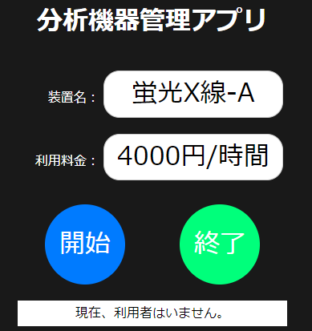
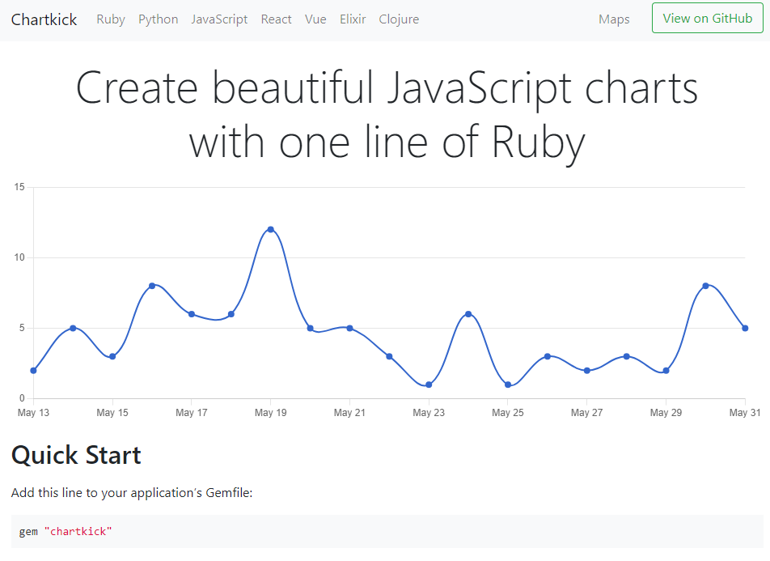

分析機器管理アプリ
開発環境
Ruby / Ruby on Rails / MySQL / GitHub / Visual Studio Code
-
概要
制作時間 40時間 URL https://equipment2.onrender.com/ ID ayabe PASS 39485 -
動作テスト
テスト用アカウント
mail testa@test.com PASS 123aaa
OUTLINEアプリケーションの概要
オリジナルアプリケーションとして、在職時に不便を感じていた分析機器利用記録を行うアプリを開発しました。
主な機能は、ユーザー登録機能、分析機器の利用記録機能、利用者の有無表示機能、利用記録表機能です。
トップページにアクセスすると、ユーザー機能、機器選択、表作成機能、そして現在使用中の機器を表示する構成になっています。
ユーザー登録をすると、機器選択から各機器の詳細画面に遷移し、機器利用記録を行うことができます。
利用者がいた場合、トップページに機器名、利用者名、内線番号表示しています。この表示により、「緊急で使用したい」、「終了予定を知りたい」などといった場合、利用者同士で機器使用の優先順位を相談できることを想定しました。
いずれのページでも表示項目、ボタンなどを最小限にし、操作のしやすさ、わかりやすさを最優先に考えて開発しました。
-
開発に至った経緯
化学分析機器を管理、メンテナンスし、他部署社員へのレンタル利用を行う部署にいました。
この部署では四半期ごとに各部署に機器の利用料金を請求する必要があります。 機器は、①PC制御、②PC制御だがスタンドアローン、③PCなし、があったため、利用履歴は大学ノートへの記帳で管理されていて、四半期末に履歴をExcelで書き写しており、手間がかかっていました。
この作業工数を低減したいと思い、アプリケーションを開発するに至りました。
-
開発で工夫したこと
「シンプルであること」、「スマホでの運用」の二点を念頭に置いて開発しました。
一つ目の「シンプルであること」のために、使用するボタンを可能な限り少なくしました。分析機器を使用する際は、分析する試料、実験器具などを持っている場合があります。その場合細かい操作が難しいため、大きなボタンを実装しました。また電話などで問い合わせられても、「〇色のボタンを押してください」と簡単に説明できるよう、ボタンの色は単純な色で表現しました。
二つ目の「スマホでの運用」を考え、コンテンツの表示領域を細長くしました。会社では個人にノートPCが貸与されているため、ノートPCでの運用を基本としますが、「異常値の有無の確認」など短時間での利用の場合はノートPCを持ち歩かないことも想定されます。そういったときにスマホを使用することを考えました。
-
今後実装したいと思っていること
グラフ表示機能を設けたいと考えています。
数値よりもグラフなど一目でわかる方が変化を理解しやすいためです。昨年同月比、部署ごとの比較などを表示したいと思っています。 chartkickというgemでグラフ作成ができるようですので、実装を考えています。